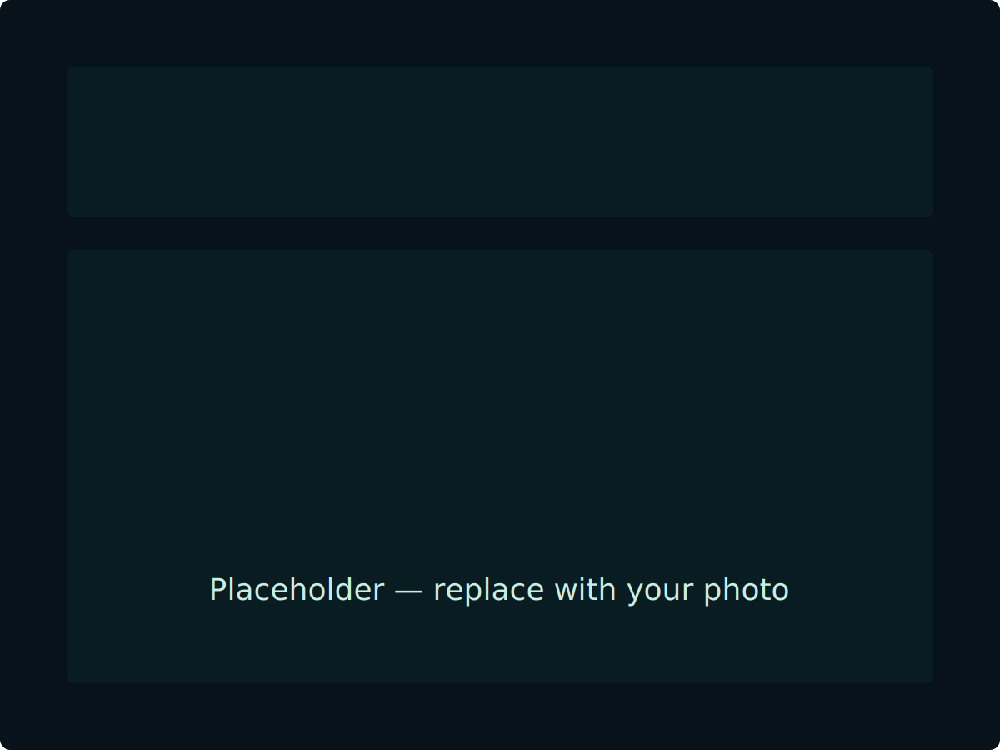

Photography Projects
Browse project sections — each card contains an image on the left and a short project description on the right. Scroll down to see more projects and click a card to open the project page.

Project Title One
A short description of project one. Describe the concept, location, or techniques used. Replace this with your project text.

Project Title Two
A short description of project two. Add a sentence or two to introduce the work or the story behind the visuals.

Project Title Three
A short description of project three. Use this to highlight clients, gear, or notable results.